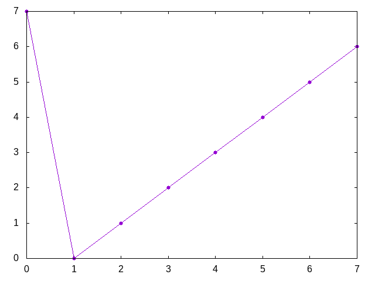
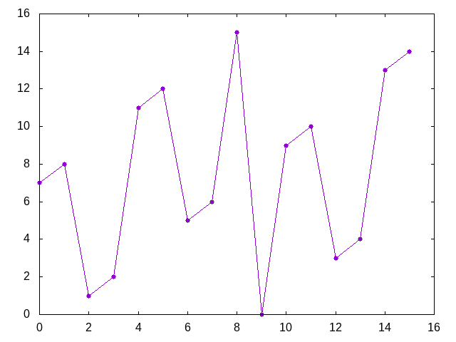
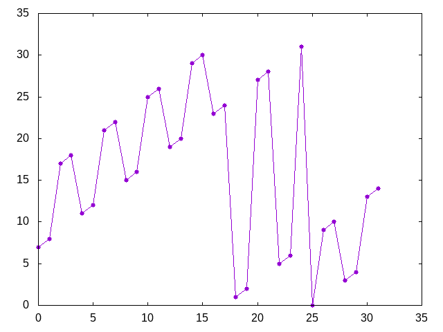

Números con dígitos 1 y 2
Definir las funciones
numerosCon1y2 :: Int -> [Int] restosNumerosCon1y2 :: Int -> [Int] grafica_restosNumerosCon1y2 :: Int -> IO ()
tales que
- (numerosCon1y2 n) es la lista ordenada de números de n dígitos que se pueden formar con los dígitos 1 y 2. Por ejemplo,
numerosCon1y2 2 == [11,12,21,22] numerosCon1y2 3 == [111,112,121,122,211,212,221,222]
- (restosNumerosCon1y2 n) es la lista de los restos de dividir los elementos de (restosNumerosCon1y2 n) entre 2^n. Por ejemplo,
restosNumerosCon1y2 2 == [3,0,1,2] restosNumerosCon1y2 3 == [7,0,1,2,3,4,5,6] restosNumerosCon1y2 4 == [7,8,1,2,11,12,5,6,15,0,9,10,3,4,13,14]
- (graficaRestosNumerosCon1y2 n) dibuja la gráfica de los restos de dividir los elementos de (restosNumerosCon1y2 n) entre 2^n. Por ejemplo, (graficaRestosNumerosCon1y2 3) dibuja

(graficaRestosNumerosCon1y2 4) dibuja

y (graficaRestosNumerosCon1y2 5) dibuja

Nota: En la definición usar la función plotListStyle y como segundo argumento usar
(defaultStyle {plotType = LinesPoints, lineSpec = CustomStyle [PointType 7]})
Comprobar con QuickCheck que todos los elementos de (restosNumerosCon1y2 n) son distintos.
Soluciones
import Test.QuickCheck import Graphics.Gnuplot.Simple -- Definición de numerosCon1y2 -- =========================== numerosCon1y2 :: Int -> [Int] numerosCon1y2 = map digitosAnumero . digitos -- (dígitos n) es la lista ordenada de de listas de n elementos que -- se pueden formar con los dígitos 1 y 2. Por ejemplo, -- λ> digitos 2 -- [[1,1],[1,2],[2,1],[2,2]] -- λ> digitos 3 -- [[1,1,1],[1,1,2],[1,2,1],[1,2,2],[2,1,1],[2,1,2],[2,2,1],[2,2,2]] digitos :: Int -> [[Int]] digitos 0 = [[]] digitos n = map (1:) xss ++ map (2:) xss where xss = digitos (n-1) -- (digitosAnumero ds) es el número cuyos dígitos son ds. Por ejemplo, -- digitosAnumero [2,0,1,9] == 2019 digitosAnumero :: [Int] -> Int digitosAnumero = read . concatMap show -- Definición de restosNumerosCon1y2 -- ================================= restosNumerosCon1y2 :: Int -> [Int] restosNumerosCon1y2 n = [x `mod` m | x <- numerosCon1y2 n] where m = 2^n -- Definición de graficaRestosNumerosCon1y2 -- ========================================= graficaRestosNumerosCon1y2 :: Int -> IO () graficaRestosNumerosCon1y2 n = plotListStyle [ Key Nothing , PNG ("Numeros_con_digitos_1_y_2_" ++ show n ++ ".png") ] (defaultStyle {plotType = LinesPoints, lineSpec = CustomStyle [PointType 7]}) (restosNumerosCon1y2 n) -- Propiedad de restosNumerosCon1y2 -- ================================ -- La propiedad prop_restosNumerosCon1y2 :: Positive Int -> Bool prop_restosNumerosCon1y2 (Positive n) = length (restosNumerosCon1y2 n) == 2^n -- La comprobación es -- λ> quickCheckWith (stdArgs {maxSize=12}) prop_restosNumerosCon1y2 -- +++ OK, passed 100 tests.